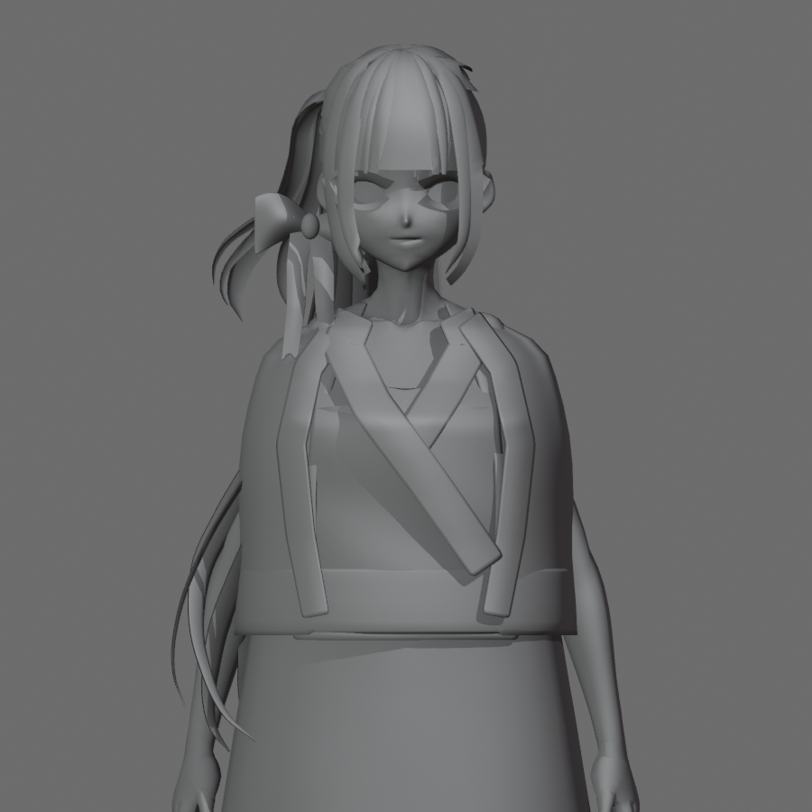
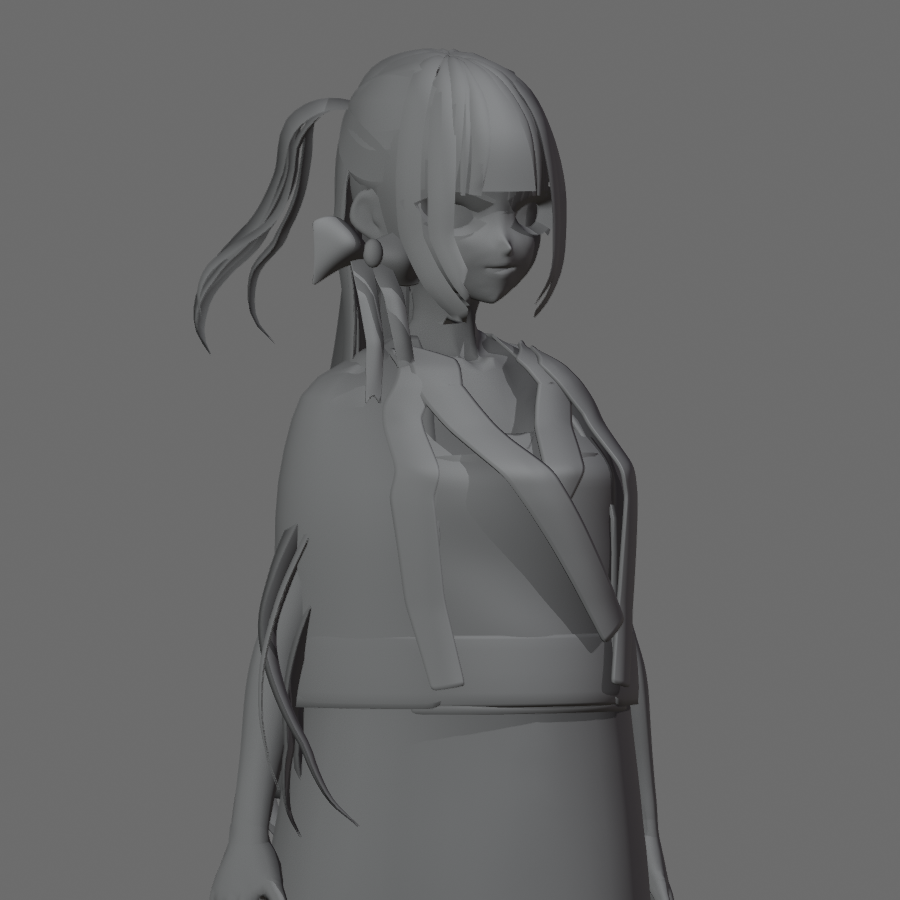
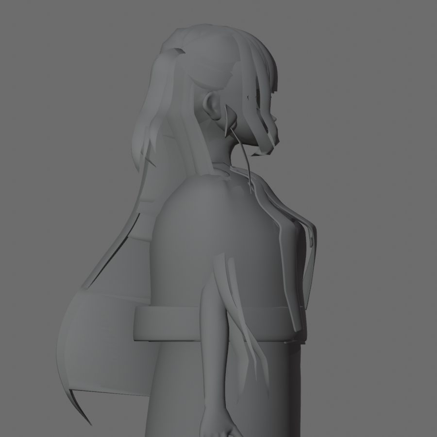
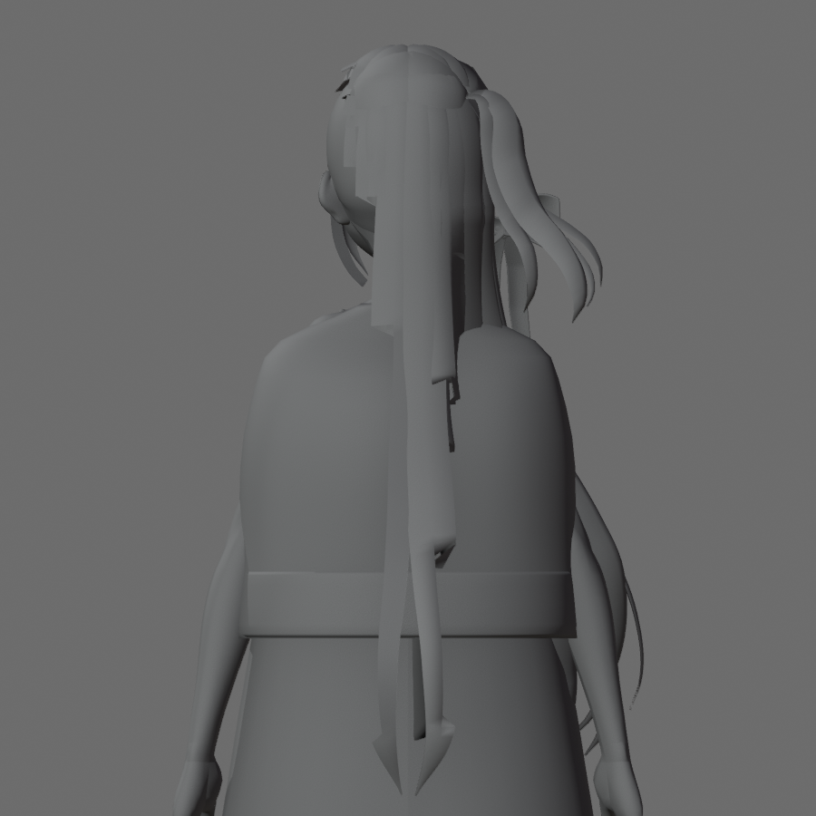
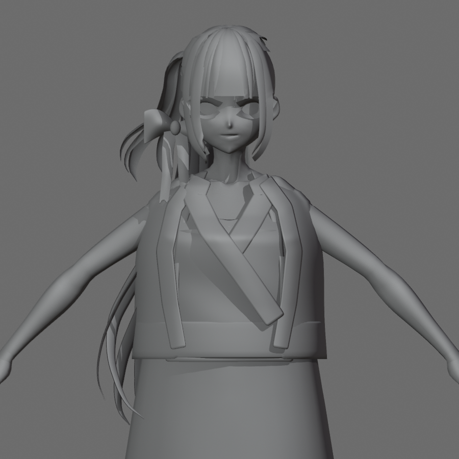
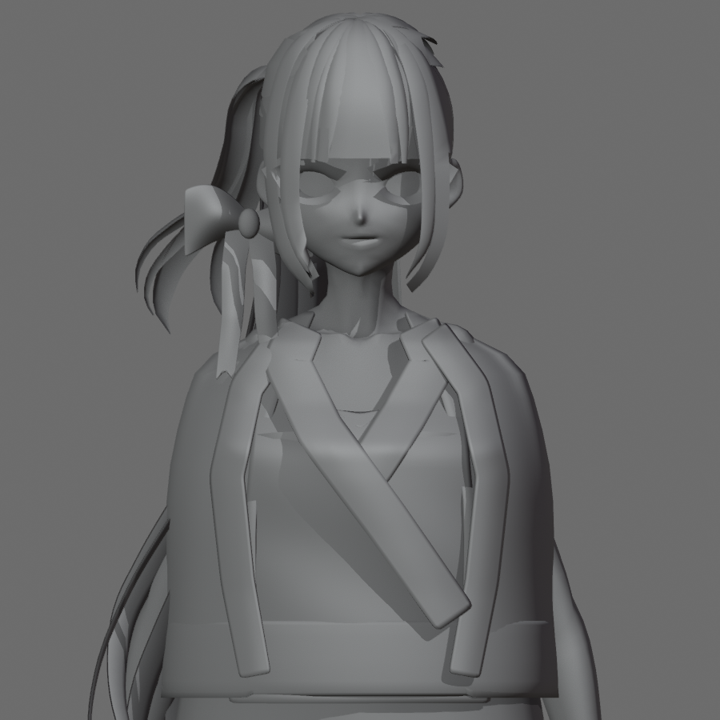
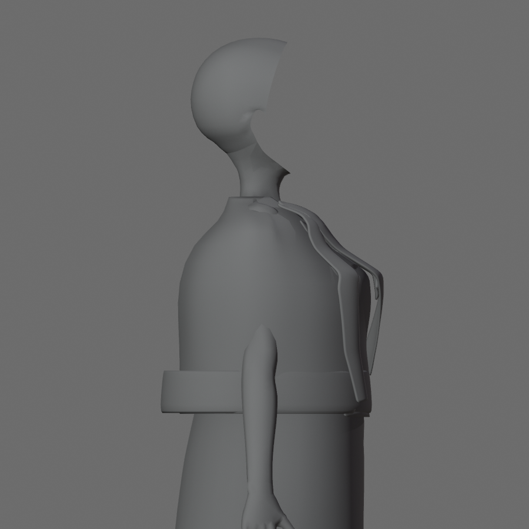
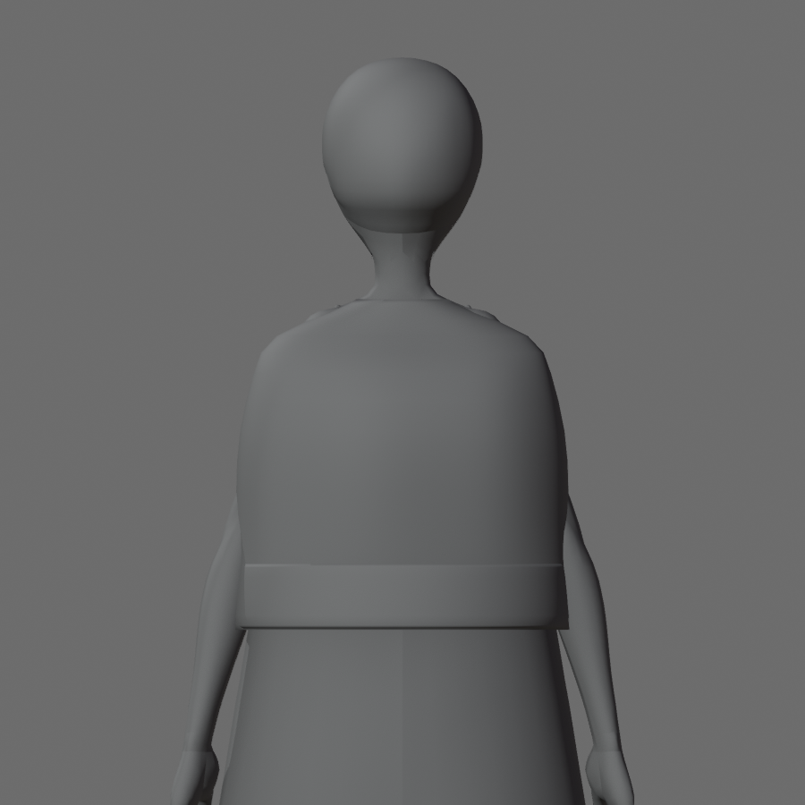

REQUIRES_HUMAN_ART_REVIEW · Agent visual: FAIL. Sau 3 lượt, vai–tay áo và cổ vẫn lỗi. Dừng geometry; chưa thêm trang trí hoặc xuất VRM.
Candidate: outputs/wip/kagari_v03_clay_03.blend
SHA256: 4a3dc7560df7d3f0db452a4d0c06faf55238bce2fd045ed23f8c27ac75dd6051
Trái: baseline cố định. Phải: candidate 03. Camera, ánh sáng, framing và pose tương ứng giữ đồng nhất.













